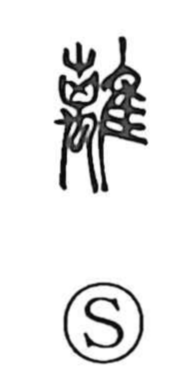

離

Uncategorized
Kun: hanareru, hanasu | On: ri
to separate ・ to part ・ separation
Explanation
This is a phono-semantic character with ri as its sound element. Early forms depict two instances of 虫—originally not just “insects” but serpentine and even dragon-like creatures—entwined and aligned, an image that evokes a bird caught on sticky bird-lime and then straining to pull free. From this vivid scene the character came to encompass both the state of being caught and, more characteristically, the act of breaking away: to separate, to part, to be set apart.